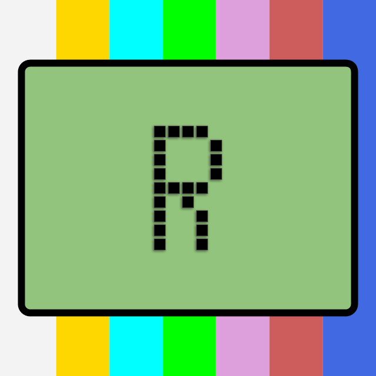

Rudix is a build system target on macOS with minor support to OpenBSD, FreeBSD, NetBSD and Linux. The build system provides step-by-step instructions (called "ports") for building third-party software, entirely from source code.
Similar projects/alternatives to Rudix includes: Homebrew, MacPorts, pkgsrc and Fink. This project is hosted at GitHub/rudix-mac.
After more than 20 years, the Rudix project is being retired. Mission accomplished. The decision is driven by Apple's transition to ARM64 and the high cost of development hardware in Brazil. All repositories under rudix-mac will be archived on April 1, 2026. No further development or updates will be made.
The name "Rudix" remains my personal property and moniker, and I ask the community to respect that.
Thank you to everyone who contributed, used, or supported Rudix throughout this journey. It was hard work, filled with pride and satisfaction.